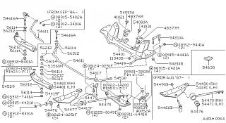
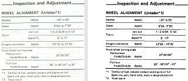
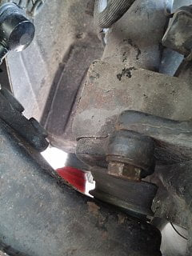
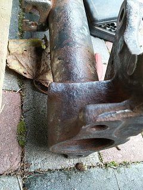

-
I'm planning to try out a coilover setup, but I'm having a hard time finding front spindles from the correct year. It's a part that's a bit too bulky to ship from US to EU for a reasonable price. I'd like to know what would be the downsides of using 84-86 spindles on an 87-89 car.
The car is an 87 turbo and I have a set of spindles from an 84 NA. I have gathered that there was a roll center difference between the two designs. The coilovers I'm getting should allow camber adjustment in the front. How big of a difference would I get from using the 84 spindles? Is it a reasonable alternative if I do not manage to find a set from a Kouki model?
EDIT: there's a summary of the answer with photos on the second pageLast edited by kaur; 07-21-2017, 05:16 AM. -
z31.com claims its the lower control arm length that is different (+10mm late), i've never measured the spindle angle's or arm length.
Can you dig anything up with some info? most of the suspension heads here are ghost
here's a random page that list 84 track width 1410mm http://www.carfolio.com/specificatio…car/?car=27566 and 88 track width at 1455 http://www.carfolio.com/specificatio…ar/?car=195173
it's a toss up unless you have a late production 87, if it's 10/87+ i'd say it's safe to assume you have the wider track -
I don't know the differences between the two but let's look at what they might be. For either one the roll centre can be adjusted with the appropriate spacers, caster with adjustable tension arms/strut tower mods, camber with strut tower mods/adjusters. Which leaves brakes and tech stuff like king pin angle and so on, brakes can be researched here, the rest is beyond me so good luck. -
Z31.com claims a 10mm difference between the LCA, maybe you were thinking of that?
I've never measured the arms or spindle angles.
-
Could you say a bit more about that?Originally posted by 260DET View Post
There is a difference in the angle between the wheel's rotating axis and the strut tube. I haven't pulled them off for measurements yet, but just sticking my finger between the strut tube and the bracket that carries the spindle I can see there's a difference. There also seems to be a difference in spacing between the two. How big the differences are, I can't really tell.
Somewhere I also read that the strut tubes of turbo and NA cars had different diameters.
The LCAs had differences in USDM cars but as far as I understand they didn't change them on the Euro models so it was the same 84-89.
I suppose all in all the differences can be fixed with adjustments, just trying to get a better overview of it all. -
Try digging in the FSM for specs? i'm not even sure if they're listed in it though. -
Parts manual is a good place too, the relevant page (see below) shows changes made in Sep 86 and Aug 87.
And while we are at all things technical linked is some good info on front ends http://www.motoiq.com/MagazineArticl…and-Scrub.aspxLast edited by 260DET; 09-11-2016, 06:01 PM. -
That was a good read, thanks.Originally posted by 260DET View Post
-
So, now I knew what to look for and found this. On the left I have specs from the 84 Euro FSM and on the right specs from 87 USDM FSM. There is a 40' difference in kingpin inclination, that's 2/3 of a degree. Considering that the range is given in a 1.5 degree interval, it's not really that big of a difference, is it?
However, I'm not sure yet if the 87 Euro model had the same change, because the FSM doesn't include this data. -
Some more information for reference. Photos of the non-adjustable 87 turbo Euro EC installed and adjustable 84 NA Euro EX.EC stripped. The position of the spindle relative to the steering knuckle and control arm is the same, but the position of the strut tube is slightly different. On the later model, the strut tube is offset more towards the engine, leaving a larger gap and more space for the wheel. You can see a curved part on the left right above the steering knuckle.  -
Yes, there is a difference in angle from early to later, the later having increase. If you are gaining camber adjustments at the top of the strut, it really doesnt matter which set you use (just ensure they are matching).
The only time to pay attention to the difference if you do not have fine camber adjustment you typically want to pair all the OEM pieces to maximize camber.86na - BlueZ
Shiro #366 - Kouki Monster
85t - Mr Tickles -
So there is a difference in the angle that the strut tube is located in the spindle, which affects camber. That right? -
Kouki has a greater angle between strut tube and spindle. Allegedly there was also a difference in LCA length as well, but something I have not seen.
I have used kouki spindles in coilover applications, not really for the increased camber but more so there is some more space between the casting and tube which gives a little extra room for welding. Overall it is still tight fit, and any good welder can should be able to navigate.
In LCAs what I have seen is the difference in tension rod mounting. The kouki LCAs has a reinforcement plat spot welded in. Going with stiffer or solid bushings put even greater stress on tension rod mounts, which have been prone to cracking. Any suspension upgrade, I would also reinforce or box in the LCAs to increase strength.
Even better would be making your own LCA. With RCAs the LCA lip has a high probability of rotor contact during compression. I have ground the LCA lips flat, in which have minimized the occurrence. I have not had any hard contact on my latest setup, but clearance is still tight. Having a different ball joint setup and custom LCA would eliminate the probability all together.86na - BlueZ
Shiro #366 - Kouki Monster
85t - Mr Tickles -
Left Kouki, Right Zenki (hard to tell in pictures)
LCA tension rod plate
86na - BlueZ
Shiro #366 - Kouki Monster
85t - Mr Tickles -
Thanks for the tips, they're all good points to consider.

Copyright © 2006–. All rights reserved. Privacy Policy